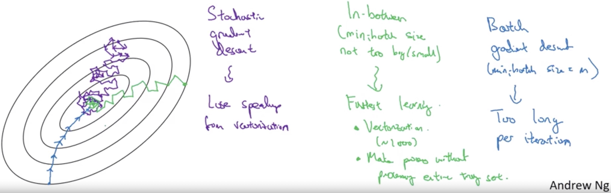
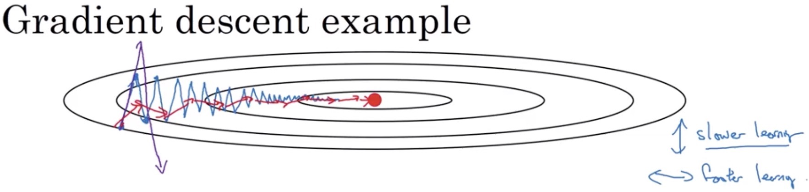

An optimization algorithm is a procedure which is executed iteratively by comparing various solutions until an optimum or a satisfactory solution is found. Here, we introduce some optimization algorithms commonly used in deep learning.
Gradient Descent
Gradient descent is a first-order iterative optimization algorithm for finding the minimum of a function.
To find a local minimum of a function using gradient descent, one takes steps proportional to the negative of the gradient (or approximate gradient) of the function at the current point as following:$$w = w - \eta \nabla Q(w) $$
Batch Gradient Descent
Batch gradient descent is a variation of the gradient descent algorithm that calculates the error for each example in the training dataset, but only updates the model after all training examples have been evaluated.
- Batch gradient descent decreases update frequency but takes much more time per iteration.
- Batch gradient descent has a more stable cost gradient and the cost goes down on every iteration. However, it may result in premature convergence of the model to a local minimum. It is an estimate of the function gradient.
- Batch gradient descent requires the entire training dataset in memory and available to the algorithm, which is memory-consuming.
Stochastic Gradient Descent
Stochastic gradient descent is a variation of the gradient descent algorithm that calculates the error and updates the model for each example in the training dataset.
It can be regarded as a stochastic approximation of batch gradient descent optimization, since it replaces the actual gradient by an estimate.
- Stochastic gradient descent increases model update frequency and can result in faster learning on some problems.
- Stochastic gradient descent can be extremely noisy, which may cause the model error/cost to jump around (higher variance). It is an unbiased estimate of the full gradient.
- The noisy update process can allow the model to avoid local minima, but it also makes it hard to settle on a minimum (oscillate around the region of the minimum).
- Stochastic gradient descent loses the speed up from vectorization (matrix computation).
Mini-Batch Gradient Descent
Mini-batch gradient descent is a variation of the gradient descent algorithm that splits the training dataset into small batches that are used to calculate model error and update model coefficients.
Mini-batch gradient descent seeks to find a balance between the robustness of batch gradient descent and the efficiency of stochastic gradient descent.$$w = w - \eta \nabla Q(w) = w - \eta \sum_{i=1}^n \nabla Q_i(w)/n$$
- The cost of mini-batch gradient descent should trend downwards with noises (oscillations). Since some easy mini-batches might have a lower cost, while hard mini-batches (with some mislabeled examples) might have a higher cost.
- The larger step size can be adopted compared to stochastic gradient descent since the gradient is more stable.
- The batch size is a hyper-parameter that can be tuned as a power of two that fits the memory requirements of the GPU or CPU hardware like 32, 64, 128, 256, and so on.

Adaptive Learning Rate Descent
AdaGrad
AdaGrad (adaptive gradient descent) algorithm is a modified stochastic gradient descent with per-parameter learning rate.
AdaGrad has a base learning rate $\eta$, but this is multiplied with the elements of a vector ($G_{j, j}$) which is the diagonal of the matrix:$$G = \sum_{\tau=1}^t g_\tau g_\tau^T$$
where $g_\tau = \nabla Q_i(w)$, the stochastic gradient at iteration $\tau$. The diagonal is given by $G_{j,j} = \sum_{\tau=1}^t g_{\tau,j}^2$.
The formula for an update is now:$$w = w - \eta, diag(G)^{-\frac{1}{2}} \circ g$$, where the $\circ$ is the element-wise product. It can also be written as per-parameter updates $w_j = w_j - \frac{\eta}{\sqrt{G_{j,j}}} g_j.$
- AdaGrad increases the learning rate for sparser parameters and decreases the learning rate for ones that are less sparse. This strategy often improves convergence performance over sparse data.
- The intuition behind is that: with the number of updates increases, it is getting closer to the optimal solution, the learning rate supposed to be down to avoid oscillations. In AdaGrad, the learning rate will shrink with large updates or frequent updates.
RMSProp
RMSProp (Root Mean Square Propagation) is also a method in which the learning rate is adapted for each of the parameters.
The idea is to divide the learning rate by an exponentially weighted average (detailed described in my previous blog) of the magnitudes of recent gradients.
The formula for an update is shown below:
$$\begin{cases}
v_w=\gamma v_w+(1-\gamma)(\nabla Q(w))^2 \\
w=w-\frac{\eta}{\sqrt{v_w+\epsilon}}\nabla Q(w)
\end{cases}$$
where, $\gamma$ is the forgetting factor, $(\nabla Q(w))^2$ is component-wise squared and $\epsilon$ is set to ${10}^{-8}$ to avoid blow up.
- The intuition of RMSProp is quite similar to Adagrad. The advantage of using the moving average instead of the accumulation of $(\nabla Q(w))^2$ is that the learning rate can not only be gradually adapted smaller but larger if the feature becomes sparse in recent updates.
Gradient Descent with Momentum
Stochastic gradient descent with momentum remembers the update $\Delta \omega$ at each iteration, and determines the next update as a linear combination of the gradient and the previous update.
In one sentence, the basic idea is to compute an exponentially weighted average of your gradients, and then use that gradient to update your weights instead.
Stochastic gradient descent with momentum remembers the update $w$ at each iteration:$$\begin{cases}
{m_{w}=\beta m_{w}+(1-\beta) \nabla Q(w)} \\
\tilde{m}_ w = \frac{m_{w}}{1-\beta^{t}} \\
{w=w-\alpha \tilde{m}_{w}}
\end{cases}$$where $t$ is the iteration, $\alpha$ is the learning rate, $\beta$ is the forgetting factor always set to 0.9 (average approximately over last 10 gradients).

- The name momentum stems from an analogy to momentum in physics. Unlike in classical stochastic gradient descent, it tends to keep traveling in the same direction, preventing oscillations.
- Momentum averages out oscillations of its gradients. The oscillations in some directions will tend to be averaged out and the gradients will get closer to zero.
Adam
Adam (Adaptive Moment Estimation ) combines RMSprop together with momentum and is an update to the RMSProp optimizer.
Given parameters $w^{(t)}$ and a loss function $Q^{(t)}$, where $t$ indexes the current training iteration (indexed at 0), Adam’s parameter update is given by:
$$
\begin{cases}
m_w ^ {(t+1)} \leftarrow \beta_1 m_w ^ {(t)} + (1 - \beta_1) \nabla _w Q ^ {(t)}\\
v_w ^ {(t+1)} \leftarrow \beta_2 v_w ^ {(t)} + (1 - \beta_2) (\nabla _w Q ^ {(t)} )^2
\\
\hat{m}_w = \frac{m_w ^ {(t+1)}}{1 - (\beta_1) ^{t+1}}\\
\hat{v}_w = \frac{ v_w ^ {(t+1)}}{1 - (\beta_2) ^{t+1}}\\
w ^ {(t+1)} \leftarrow w ^ {(t)} - \eta \frac{\hat{m}_w}{\sqrt{\hat{v}_w} + \epsilon}
\end{cases}
$$
where $\epsilon$ is a small scalar used to prevent division by 0, and $\beta_1$ and $\beta_2$ are the forgetting factors for gradients and second moments of gradients, respectively. Squaring and square-rooting is done elementwise.
- Learning rate $\eta$ is important and usually we need to try a range of values and see what works.
- A common choice for $\beta_1$ is 0.9 and the hyper parameter $\beta_2$ is recommend 0.999.
- $\eta$ is always set to $10^{-8}$ and bias correction is implemented.
Second-Order Methods
… to be continued.Reference
Wiki: Stochastic gradient descent
Coursera: Deep Learning Specialization
Blog: A Gentle Introduction to Mini-Batch Gradient Descent and How to Configure Batch Size